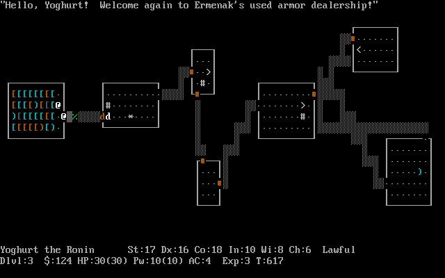

Making things with Maths
Steven Wittens
github / twitter unconed
http:// acko.net
“I don’t see how it’s doing society any good
to have its members walking around with
vague memories of algebraic formulas and geometric diagrams, and clear memories of hating them.”
Paul Lockhart, “A Mathematician's Lament”
“The power to understand and predict
the quantities of the world should not be restricted to those with a freakish knack for manipulating abstract symbols.”
Bret Victor, “Kill Math”
f=Math; e=document.body.children[$=0]; G="globalCompositeOperation"; Q=.43; P=.05; with(e){ with(style)width=(w=innerWidth-9)+"px", height=(h=innerHeight-25)+"px"; W=(width=w/=2)/2; H=(height=h/=2)/2; g=getContext("2d"); t=w/h} with(g){ scale(W/t,H); translate(t,1); setInterval(function(){ with(E=e.cloneNode(0)) width=height=H, c=getContext("2d"); c.fillRect(0,0,h,h); g[G]=c[G]="lighter"; C=f.cos; S=f.sin; L=f.atan2; q=C($); r=S(q-$*.7)+Q; u=C(r-$*Q)+Q; a=L(q,-u*2); b=L(r,u*u+q*q); n=C(a); o=S(a); N=C(b); O=S(b); $+=P; clearRect(-t,-1,2*t,2); for(i=14; i>4; --i){ v=0; for(j=25; j; ){ M=f.log(j+.2)*Q; j--; _=$-j*.07-i*4; A=C(_+S(_*.8))*2+_*P; B=S(_*.7-C(_*Q))*3; x=C(A)*C(B)*M-q; y=S(A)*C(B)*M-r; z=S(B)*M-u; k=x*n+z*o; _=z*n-x*o; l=y*N+_*O; z=_*N-y*O; lineTo(k/=z,l/=z); lineWidth=P/z; strokeStyle="hsl("+60*S($-z)+",60%,"+~~(40-j)*(Q+!j+(.1>($-j*P)%1))+"%)"; if(z>.1)v++&&stroke(); else{ v=0} beginPath(); moveTo(k,l)} } A="drawImage"; N=H/2; c.globalAlpha=Q; c[A](e,0,0,H,H); X=k*N+N; Y=l*N+N; K=1.1; c.translate(X,Y); while(i--)c.scale(K,K),c[A](E,-X,-Y,H,H); g[A](E,-t,-1,2*t,2)} ,33)}

WebGL

Framework
Live Graphing

Slideshow
Typesetting
Tip: Hold shift to slow down animations.
$$ y = 0.5 - 0.5 \cdot \cos x $$
$$ r = 0.5 - 0.5 \cdot \cos \theta $$
$$ r = 0.5 + 0.5 \cdot \cos 8 \theta $$
$$ \begin{array}{rl}
r = & \arcsin(0.5 + 0.5 \cos 8 \theta) \\
& ( 0.5 + 0.5 \cos \theta) \\
\end{array} $$
$$ r = 0.4 + 0.4 \cdot \cos ( 1.1 \cdot \theta ^{2} ) $$
$$
y = \frac{x+1}{x-3} \frac{1}{x} \frac{1}{x+2}
$$
$$
map(x) =
\left\{
\begin{array}{l}
2 - \frac{1}{x} & x > 1 \\
x & |x| \le 1 \\
-2 - \frac{1}{x} & x < -1
\end{array}
\right.
$$

GLSL Sandbox

Processing(.js)

Web Audio

Games

3D Prints

Arduino
Paul de Casteljau

1959

Pierre Bézier

1962
Vectors
$$ \class{mj-blue}{\vec a} $$
$$ \class{mj-blue}{\vec a} , \class{mj-red}{\vec b} $$
$$ \class{mj-blue}{\vec a} = \class{mj-red}{\vec b} $$
$$ \class{mj-blue}{\vec a} \neq \class{mj-red}{\vec b} $$
$$ \class{mj-blue}{\vec a} + \class{mj-red}{\vec b} = \class{mj-green}{\vec c} $$
$$ \class{mj-green}{\vec c} - \class{mj-red}{\vec b} = \class{mj-blue}{\vec a} $$
$$ \class{mj-blue}{\vec a} + \class{mj-blue}{\vec a} + \class{mj-blue}{\vec a} = 3 \cdot \class{mj-blue}{\vec a} = \class{mj-green}{\vec b} $$
$$ \class{mj-blue}{\vec a} = \frac{\class{mj-green}{\vec b}}{3} = \frac{1}{3} \cdot \class{mj-green}{\vec b} $$
$$ \class{mj-red}{\vec b} - \class{mj-blue}{\vec a} = \class{mj-green}{\vec c} $$
$$ \class{mj-purple}{\vec d} = \class{mj-blue}{\vec a} + \frac{1}{3} \cdot (\class{mj-red}{\vec b} - \class{mj-blue}{\vec a}) $$
Linear interpolation
$$ lerp({\vec a}, {\vec b}, t) = \vec a + t \cdot (\vec b - \vec a) $$
Quadratic Bezier Curve

Cubic Bezier Curve


Textures

3D Models

Maps / Terrains

Fractals
longitude = cos(time + sin(time * 0.31)) * 2
+ sin(time * 0.83) * 3 + time * 0.02
latitude = sin(time * 0.7 + 1)
- cos(3 + time * 0.43 + sin(time) * 0.13) * 2.3
$$ x = $$
$$ \ldots $$
$$ -4 $$
$$ -3 $$
$$ -2 $$
$$ -1 $$
$$ 0 $$
$$ 1 $$
$$ 2 $$
$$ 3 $$
$$ 4 $$
$$ \ldots $$
$$ f(x) = x $$
$$ f(x) = \frac{x}{2} $$
$$ f(x) = \frac{x}{2} + 1 $$
$$ \class{mj-blue}{f(x) = 2 \cdot \arctan x} $$
$$
\class{mj-green}{g(x) = \sin 6x}
$$
$$ \class{mj-red}{f(x) + g(x)} $$
$$
\class{mj-blue}{ f(x) = 0.5 + 0.5 \cdot cos x }
$$
$$
\class{mj-blue}{ f(x) = 0.5 + 0.5 \cdot cos ( min(-\pi, max(\pi, x))) }
$$
$$
\class{mj-blue}{ f(x) = 0.5 + 0.5 \cdot cos ( min(-\pi, max(\pi, x))) } $$
$$
\class{mj-green}{ g(x) = fractal(x, t); }
$$
$$
\class{mj-blue}{ f(x) = 0.5 + 0.5 \cdot cos ( min(-\pi, max(\pi, x))) } $$
$$
\class{mj-red}{ g(x) = f(x) * fractal(x, t); }
$$
$$ \class{mj-blue}{\vec p} $$
$$ \class{mj-blue}{\vec p}, \class{mj-green}{\vec v} $$
$$ \class{mj-blue}{\vec p_1} = \class{mj-blue}{\vec p_0} + \class{mj-green}{\vec v_0} \cdot 1 s $$
$$ \class{mj-blue}{\vec p_{1.5}} = \class{mj-blue}{\vec p_1} + \class{mj-green}{\vec v_1} \cdot 0.5 s $$
$$ \class{mj-blue}{\vec p_{i+1}} = \class{mj-blue}{\vec p_i} + \class{mj-green}{\vec v_i} \cdot \Delta t $$
$$ \vec f = \ldots $$
$$ \class{mj-red}{\vec a} = \frac{\vec f}{m} $$
$$ \class{mj-blue}{\vec p_{i+1}} = \class{mj-blue}{\vec p_i} + \class{mj-green}{\vec v_i} \cdot \Delta t $$
$$ \class{mj-blue}{\vec p_{i+1}} = \class{mj-blue}{\vec p_i} + \class{mj-green}{\vec v_i} \cdot \Delta t $$
$$ \class{mj-green}{\vec v_{i+1}} = \class{mj-green}{\vec v_i} + \class{mj-red}{\vec a_i} \cdot \Delta t $$
Euler integration
$$ \class{mj-blue}{\vec p_{i+1}} = \class{mj-blue}{\vec p_i} + \class{mj-green}{\vec v_i} \cdot \Delta t \\
\class{mj-green}{\vec v_{i+1}} = \class{mj-green}{\vec v_i} + \class{mj-red}{\vec a_i} \cdot \Delta t $$
$$ \vec p_{i+1} = \vec p_{i} + \int_t^{t + \Delta t}{\vec v(t) \cdot dt} $$
$$ ????? $$
Nature Of Code.com — Daniel Shiffman
“Doodling in Math Class” — Vihart
Youtube.com / user / Vihart
“Kill Math” — Bret Victor
Worry Dream.com / KillMath
Thanks!
Slides on Acko.net.
Read more about this talk on
Acko.net.
Browse the code
on Github.